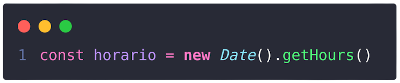
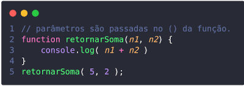
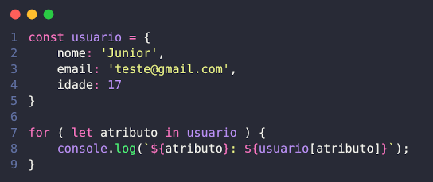

Aqui você vai aprender javascript de forma descontraída, focando em fundamentos da linguagem,
princípios e claro, entender como o mundo JS funciona!
Javascript é a limguagem que domina a web de ponta a ponta, podendo oferecer interatividade para
os usuários, JS também está presente no desenvolvimento mobile onde vem crescendo muito através
dos framework.
Javascript ❯ Fundamentos
A História do Javascript
O JavaScript chegou ao Netscape Navigator 2.0 em setembro
de 1995, com o objetivo cujo a sua
principal função de tornar uma página web dinâmica. Em versões diferentes, a linguagem só
evoluiu para melhor com recursos, facilidades e é possuí uma ótima linha de aprendizagem.
Variável
Algo que é fundamental saber em JS são definição de variáveis. Afinal, o que é variável?
Variável
são um local onde é armazenado temporarimente ou definitivo um valor onde pode mudar o seu
valor. A variável é composto por três etapas, declaração, nome e
valor. Com JS
existe 3 formas de declarar uma variável var, let e const.
Declaração com VAR
Declaração com var a variável se transforma de forma
global, ou seja ela é
acessável em todo o código JS.
Declaração com LET
Declaração com Let a variável se transforma de forma local,
ou seja ela é
acessável apenas em uma única escopo.
Declaração com CONST
Declaração com Const a variável se transforma de forma
local, ou seja ela é
acessável apenas em uma única escopo, o que diferencia é que o const tem valor fixo e não
pode
ser alterado.

CONCATENAÇÃO DE VARIÁVEIS
Basicamente concatenação são formas de acessar uma variável de forma rápida e fácil. Existem
duas formas de acessar: com o + e com templeteString
TempleteString
Com o mesmo objetivo de acessar uma variável, templeteString é necessário algumas mudanças,
elas são:
Utilizar crazes (` `)
Para acessar use o simbúlo do $ com chaves de abertura e
fechamento.
Estrutura de dados do Javascript
Todas as linguagens de programação têm sua própria estrutura de dados embutida, mas essa
estrutura frequentemente difere uma da outra. Este artigo busca listar os tipos de dados
disponíveis na linguagem JavaScript e que propriedades eles possuem. Quando possível,
comparações com outras linguagens serão apresentadas.
Tipagem Dinâmica
JavaScript é uma linguagem de tipagem dinâmica. Isso
significa que você não necessita declarar o tipo de uma variável antes de sua atribuição. O
tipo será automaticamente determinado quando o programa
for processado. Isso também significa que você pode reatribuir uma mesma variável com um
tipo diferente:
Tipos de Dados
A última versão ECMAScript define sete tipos de dados:
Boolean
Null
Undefined
Number
BigInt
String
Symbol
e Object
Valores Primitivos
Todos os tipos, com a exceção de objetos, definem valores imutáveis (valores que são
incapazes de mudar). Por exemplo e diferentemente da linguagem C, Strings são imutáveis.
Nós nos referimos a valores desse tipo como "valores primitivos".
Tipo "Boolean"
Boolean representa uma entidade lógica e pode ter dois valores: verdadeiro(true) ou
falso(false).
Tipo "Null"
O tipo Null tem exatamente um valor: null(nulo). Veja null e Null para mais detalhes.
Tipo "Undefined"
Uma variável que não foi atribuída a um valor específico, assume o valor
undefined(indefinido). Veja undefined e Undefined para mais detalhes.
Operadores
Em uma linguagem de programação é fundamental que você entenda o que são operadores de
preferência possuir conhecimento com os operadores:
Aritméticos
Relacionais
Lógicos
Operadores Aritméticos
Os operadores aritméticos executam operações matemáticas,
como adição e subtração com operandos. Há dois tipos de operadores matemáticos: unário e binário. Os operadores unários executam uma ação
com um único operando. Operadores binários executam ações com dois operandos.
+ Mais
- Menos
* Multiplicação
/ Divisão
% Resto de Divisão
** Potência
Operadores Relacionais
Operadores relacionais são utilizados para comparar
valores, o resultado de uma expressão relacional é um valor booleano (VERDADEIRO ou FALSO). Os operadores relacionais são: igual,
diferente, maior, menor, maior ou igual, menor ou igual.
> Maior
< Menor
>= Maior ou igual
<= Menor ou igual
== Igualdade
=== Indêntico
!= Diferente
!== Exatamente diferente
Operadores Lógicos
Os operadores lógicos entram quando precisamos realizar
operações sobre um ou dois valores booleano (verdadeiro ou falso). ... Para realizar essa
análise precisamos realizar uma operação sobre os valores booleanos que foram retornados
pelas comparações e para isso usamos um operador lógico.
!! Negação (não aceita valores diferente de true)
&& Conjunção (apenar valores true)
|| Desjunção (pode ser true ou false)
Javascript ❯ Estrutura de Controle
Estrutura de Controle com JS
Estrutura de controle na programação com toda certeza você já ouviu falar, se não, conheça um
pouco mais. São o famoso if e else ou seja, se e se não.
Bem simples.
Declarando um if
A condicional if é uma estrutura condicional que executa a
afirmação, dentro do bloco, se determinada condição for verdadeira.
Declarando um if e else
Com o if e else tem duas possibilidades, faça isso quando for true e faça isso quando for
false.
Declarando um else if
Else if é uma forma de adicionar multiplos controle de uma determinada condição ao envés de
terminar no else. Por exemplo:
Javascript ❯ Funções
Funções com JS
Funções são blocos de construção fundamentais em JavaScript. Uma
função é um procedimento deJavaScript - um conjunto de instruções que executa uma
tarefa ou calcula um valor. Para usar uma função, você deve defini-la em algum lugar no
escopo do qual você quiser chamá-la.
Declarando uma função
Para definir uma função existe uma palavra reservada que é function e tabém
possuí 3 etapas:
✔ Nome da Função.
✔ Lista de argumentos para a função, entre parênteses e separados por vírgulas.
✔ Declarações JavaScript que definem a função, entre chaves { }.
Para funcionar, invoque a função criada como está acima.
Arrow Function
Uma expressão arrow function possui uma sintaxe mais curta
quando comparada a
uma expressão de função (function expression) e não tem seu próprio this, arguments,
super
ou new.target. Estas expressões de funções são melhor aplicadas para funções que
não
sejam métodos, e elas não podem ser usadas como construtoras (constructors).
Funções com parâmetro
Parâmetro é o nome que se da para a variável que nós
declaramos na definição de uma função. Depois das novas
implementações do ES6 há três tipos de parâmetros que podemos utilizar ao definir as funções
em Javascript.

+
This e bind
O this é uma palavra reservada que referência um objeto. É muito utilizado em POO como o JS é uma linguagem de multiparadgma, ela também se encaixa. Já o bind é um metodo que torna o acesso com o this de forma mais fácil.
This
Como dito o this referência um objeto, veja abaixo:
Opa! Olha só, o this está apontando para a saudacao que está dentro do objeto.
Bind
Enfim o bind, que serve para acessar o this de forma rápida e até mesmo armezanar em uma variável. Veja:
Lendo de forma simples: Foi criado uma constante que acessa o objeto e a função passado, com bind acessa o objeto que o this faz referência.
Javascript ❯ Objetos
Objetos com JS
A linguagem JavaScript é projetada com base em um simples paradigma orientado a objeto. Um objeto é uma coleção de
propriedades, e uma propriedade é uma associação entre um nome (ou chave) e um valor. Um
valor de propriedade pode ser uma função, que é então considerada um método do objeto. Além
dos objetos que são pré-definidos no browser, você pode definir seus próprios objetos.
Visão geral de objetos
Objetos em JavaScript, assim como em muitas outras linguagens de programação, podem ser
comparados com objetos na vida real. O conceito de objetos em JavaScript pode ser entendido
com objetos tangíveis da vida real.
Em JavaScript, um objeto é uma entidade independente, com propriedades e tipos. Compare-o com
uma xícara, por exemplo. Uma xícara é um objeto, com propriedades. Uma xícara tem uma cor,
uma forma, peso, um material de composição, etc. Da mesma forma, objetos em JavaScript podem
ter propriedades, que definem suas características.
Declarando um Objeto
Para declarar um object é necessário usar as famosas chaves {
} abrir e fechar. Sem mistério, o objeto é composto por 3 etapas:
nome
atributo
propriedade
Manipulando Object
Certo, você já sabe como criar um objeto com JS, más como utilizar o atributo criado? É isso
que você saberá agora, veja abaixo.
Para capturar um atributo é bem simples, segue exemplo:
Destructuring
Destructuring nada mais é que uma forma de extrair os
atributos podendo criar uma variável com aquele atributo, segue exemplo:
Javascript ❯ Array
Array com JS
O JavaScript Array faz parte dos objetos globais da
linguagem e é utilizado para armazenar uma coleção de elementos em uma única variável. Na
prática, o array é uma estrutura de dados que contém um índice
numérico e um elemento, que pode ser de qualquer tipo primitivo de dados, um
objeto ou, até mesmo, um outro array
Criando um Array
Para criar um array é bem semelhante com o objetos, é claro que possuí suas diferenças, veja
elas:
Um array é necessário [ ]
Os valores são passados através de aspas, seja simples ou
dupla.
E os valores são separados por vírgula.
Manipulando um array
Diferente do objeto, para ter acesso a um array passamos uma índice númerica. Ou seja para
ter acesso utilize o nome do array declarado e [ número da índice ] Segue exemplo:
Javascript ❯ Repetições
Estrutura de Repetições
As estruturas de repetição são úteis, por exemplo, para
repetir uma série de operações semelhantes que são executadas para todos os elementos de uma
lista ou de uma tabela de dados, ou simplesmente para repetir um mesmo processamento até que
uma certa condição seja satisfeita.
Repetições
Existem 3 formas de definir uma estrutura de repetições na programação:
While
Do while
For
While
O laço while, um dos mais simples em Javascript, testa uma determinada condição no início de
cada volta do laço e continua fazendo isso enquanto (while) a expressão condicional for
avaliada como true.
Do while
O do/while tem quase o mesmo funcionamento que o while, a
diferença é que com o uso dele teremos os comandos executados ao menos uma única vez.
For
A instrução for cria um loop que consiste em três expressões
opcionais, dentro de parênteses e separadas por ponto e vírgula, seguidas por uma
declaração ou uma sequência de declarações executadas em sequência.
Veja dessa forma: inicio ; teste ; incremento
Ou seja, comece com i valendo 2, enquanto i < for menor ou igual a 10, a cada loop pule
dois números.
For in
O laço for...in interage sobre propriedades enumeradas de
um objeto, na ordem original de inserção. O laço pode ser executado para cada propriedade
distinta do objeto.
É uma excelente forma de percorrer um objeto ou um array.
Percorrendo um objeto com for in

Dessa forma vai percorrer cada item do objeto e mostrar da forma na qual você desejar, legal
né!?